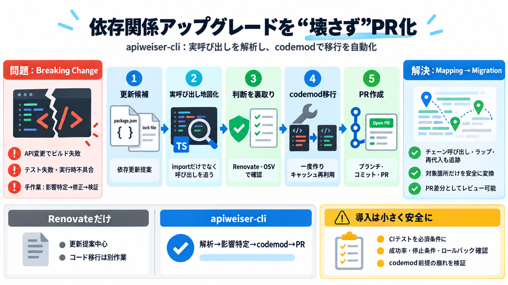

Breaking changes: a tooling problem - Richard Marmorstein
keeping track of that yourself as you mount them. This change can’t realistically be tackled with a codemod. [...] As wi…

依存関係の更新が「本当にコードを壊すか」を確認し、必要な修正を自動化してPRまで出す。
npmパッケージのアップグレードは、API変更でコンパイル不能・テスト失敗・実行時不具合を招く。
単なる依存更新ではなく、TypeScriptで「どこでどう呼んでいるか」をマッピングしてから移行する。
パッケージ/ロック更新から、codemod適用、ブランチ作成、コミット、PRオープンまでを自動化する。
「import追跡」ではなく、TypeScriptの型チェッカーで実際の利用形を解釈して対応箇所を特定する。
LLMだけで「最新が破壊的か」を決めず、RenovateとOSV照合で裏取りする設計。
codemodは一度作ってキャッシュし、対象呼び出し箇所をカバーしていれば無駄な書き換えを増やさない。
紹介文にある流れは「依存更新→codemod適用→ブランチ/コミット→PR」です。
Renovate単体のバージョン更新は「壊れる可能性」を直せないことがある。
解析→判断→移行→検証→PR提示の一気通貫は魅力。一方で、成功率・失敗時の扱い・検証範囲は読み取れない。
自動化は強力なので、少数の安全な依存から開始し、CIでテスト結果を必須条件にする。
本文で触れた周辺要素を最小限に再掲する（原紹介文に基づく要約）。
keeping track of that yourself as you mount them. This change can’t realistically be tackled with a codemod. [...] As wi…
This behavior was questionable, especially the detection of whether the import doesn't refer to a value, since it means …
Skip to content CosmosCLIChangelog [...] Breaking change detection is mostly not that kind of problem. Most breaking ch…
| | | | --- | | | sapphyrus on Jan 26, 2022 | prev | next (javascript:void(0)) Maybe tsc already does this, bu…
Package authors publishing types can use whatever tools they find easiest to use and integrate, within the constraint th…